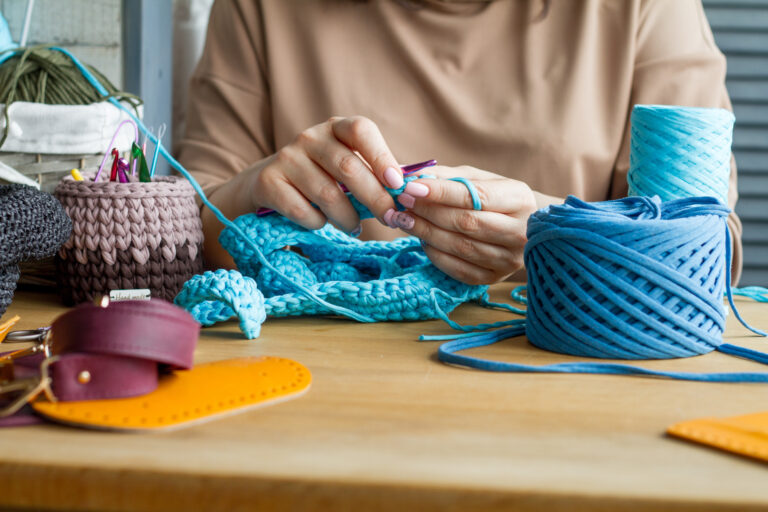

Conheça mais sobre, Majo Crochê!
🎯 Minha missão é criar peças encantadoras, únicas e personalizadas para cada cliente, combinando
a tradição do artesanato com inovação, oferecendo peças com cores e estampas variadas, para
exclusividade de design e arte!
🎯 Meu objetivo é expandir minha marca, para chegar as mais distantes regiões deste país, levando
a qualidade do artesato para todos os que buscam!
🎯 Valores:
🌟Paixão: Amor por cada peça produzida.
🌟Compromisso: Entrega rápida, conforme o combinado.
🌟Sustentabilidade: Valorização por práticas sustentáveis, para não levar nenhum prejuízo para
o meio ambiente, desde o início do projeto até a entrega para o cliente.
🌟Inovação e criatividade: Novas técnicas, estampas, moldes, para sempre inovar em cada peça.

Maria, crocheteira apaixonada por seu trabalho!
Profissional com mais de 30 anos de experiência na arte do artesanato em Crochê.
Todos os anos de experiência, contribuiram para o acompanhamento das tedências de moda
para peças de artesanado, além de buscar constantemente aprimoramento dos trabalhos produzidos.